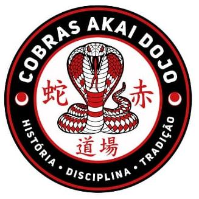

FALE COM O Dojo
Seu próximo passo.
Converse com a academia pelo WhatsApp.
+55 11 99817-8561
QUERO COMEÇARInstagram oficial
COBRAS AKAIDojoCONTATO & LOCALIZAÇÃO
Quer conhecer uma atividade ou combinar sua primeira visita? Fale com a equipe.
FALE COM O Dojo
Converse com a academia pelo WhatsApp.
+55 11 99817-8561
QUERO COMEÇARInstagram oficialTerça a sexta · 08h–22h Sábado · 09h–14h Domingo · fechado Segunda-feira · consulte a academia Estes são os horários de funcionamento. Consulte a grade de cada atividade antes da visita.
História. Disciplina. Tradição.
Voltar ao início